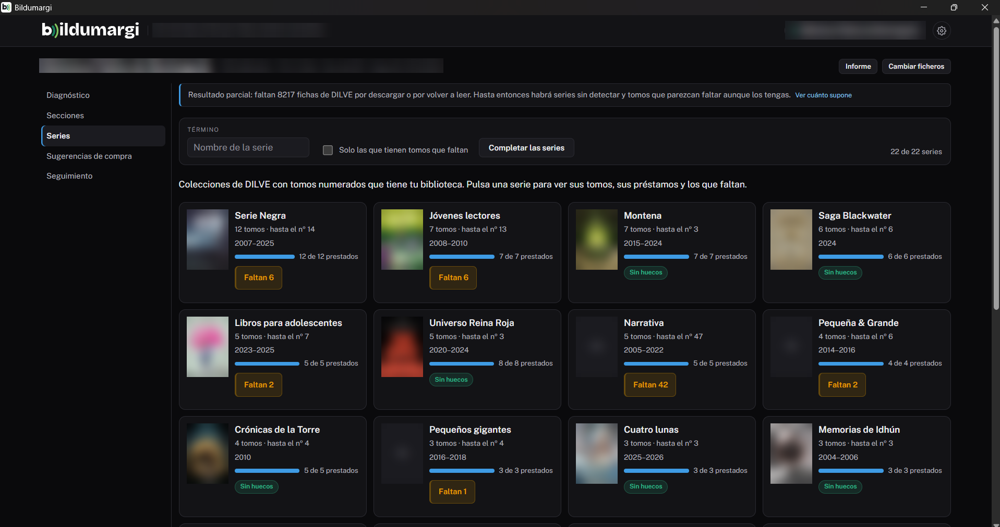
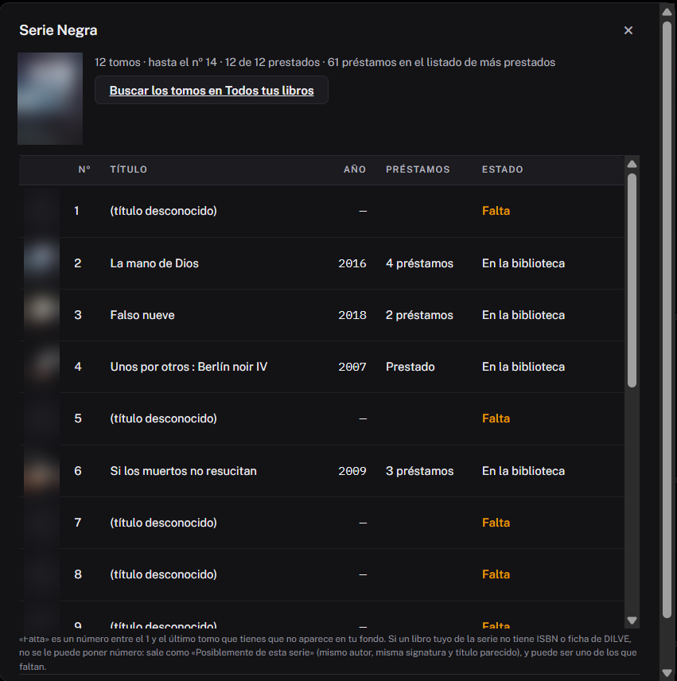

Series¶
La pestaña Series reúne las series que tiene tu biblioteca («Los Futbolísimos», «Geronimo Stilton», «Harry Potter»…) y te dice, de cada una, qué tomos tienes, cuánto se prestan y cuáles faltan. Funciona con las fichas de DILVE de tu catálogo (ver DILVE).

Un recuadro por serie¶
Cada recuadro muestra:
- la portada del primer tomo;
- cuántos tomos tienes y hasta qué número llega la serie;
- los años de publicación;
- una barra con cuántos ejemplares han salido en préstamo;
- etiquetas: Faltan N (huecos en la numeración), N posteriores (tomos más nuevos que el último que tienes), posibles sin ficha o Sin huecos.
Arriba hay un buscador por nombre y la casilla Solo las que tienen tomos que faltan.
El detalle de una serie¶
Al pulsar un recuadro se abre la lista de tomos:
| Columna | Qué es |
|---|---|
| Nº | El número del tomo en la serie. |
| Título y Año | De tu catálogo o de la ficha de DILVE. |
| Préstamos | Los del listado de más prestados; si no, si ha salido o no. |
| Estado | En la biblioteca, Falta (hueco en la numeración), Posterior: falta (con su fecha de publicación) o Posiblemente de esta serie. |

Debajo hay dos botones:
- Buscar los tomos en Todos tus libros: abre en el navegador el catálogo de las librerías (CEGAL) con la búsqueda de la serie hecha. Ahí salen los tomos con su número y título.
- Descargar CSV con la lista.
Completar las series¶
DILVE no permite pedir una serie entera. Por eso, el botón Completar las series pide a DILVE las fichas de los libros que pueden ser tomos de tus series:
- los que las editoriales dan como «otras obras del mismo autor» en las fichas de tus tomos;
- los de esos autores en el catálogo de la red, si se extrajo el catálogo MARC.
Cada ficha dice a qué serie pertenece y qué número tiene: así aparecen los tomos posteriores a los tuyos y los huecos con su título. Además, renueva las fichas de tus tomos con más de un mes, para recoger los recién publicados. Púlsalo de vez en cuando.
Como en la descarga del catálogo, antes de empezar enseña cuántas llamadas a DILVE supone y solo empieza si confirmas.
Cómo se reconoce una serie¶
En DILVE, la «colección» de un libro mezcla dos cosas: series de verdad y colecciones de editorial («Andanzas», «Serie Negra»). Bildumargi cuenta como serie una colección:
- con al menos dos tomos tuyos numerados (hasta el 60);
- cuyos tomos son casi todos del mismo autor, o llevan el nombre de la serie en el título («Minecraft…», de varios autores).
Si se cuela alguna que no lo es, en su detalle está No es una serie: ocultarla. Las ocultas se recuperan en Configuración, apartado Series ocultas.
«Posiblemente de esta serie»
Un libro tuyo sin ISBN o sin ficha de DILVE no se puede numerar. Si es del mismo autor, con la misma signatura y un título que empieza como los de la serie, aparece aparte como «Posiblemente de esta serie»: puede ser uno de los que figuran como «Falta».
Los tomos nuevos se van guardando
Cada tomo de tus series que llega en las novedades de DILVE se guarda para siempre, aunque salga de la ventana de meses. Con el tiempo, Bildumargi conoce más tomos de cada serie.